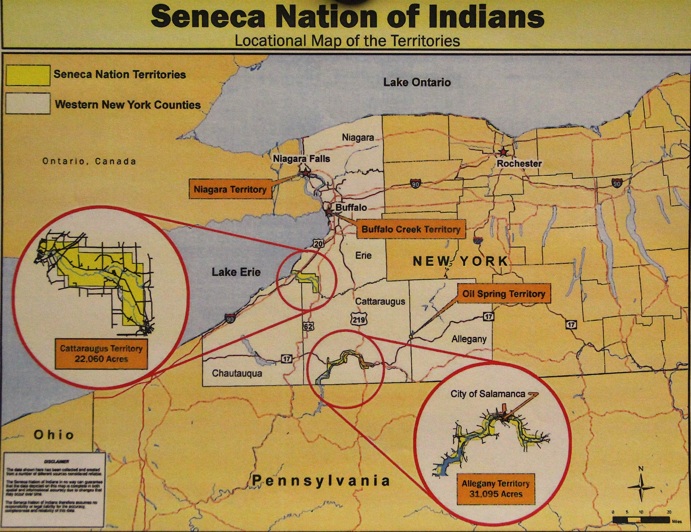
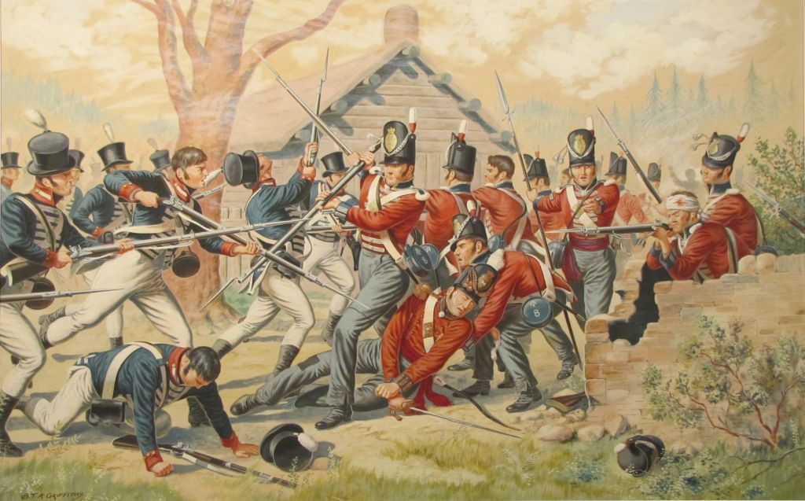
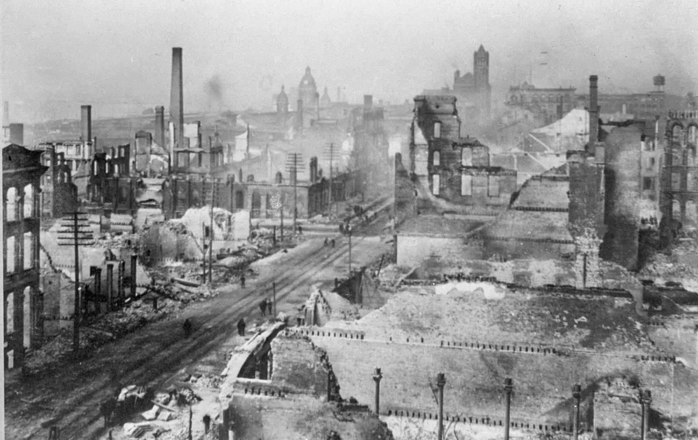
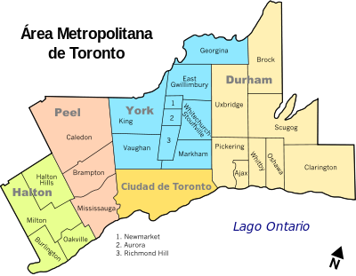

Al segle XVII, Toronto era la terra indígena dels seneca.
El francès Étienne Brûlé va ser el primer Europeu a
desembarcar, en 1615. Als amerindis no els va agradar la
visita; la gèlida benvinguda que li van mostrar retard, només temporalment, la
colonització francesa. En 1720 es van assentar finalment la regió i van
construir un lloc per al comerç de pells en el que ara és l'extrem occidental de
la ciutat.
En 1793 els britànics van conquerir la regió i John Simcoe, lloctinent i
governador d'Alt Canadà, escollit el lloc per fundar la ciutat de York i
establir la capital. El 27 d'abril de 1813, durant la guerra de 1812, l'exèrcit
nord-americà va arribar a Fort York i va vèncer a les tropes britàniques i
ojibwe. Els nord-americans van saquejar i van arrasar York, però només la van
dominar durant 6 dies perquè les tropes canadenques van aconseguir fer-los fora
i seguir-los fins a les minimíssimes porta de Washington.
En 1834, l'alcalde de York, William Lió Mackenzie, rebateig la ciutat com
Toronto (lloc de reunions) en llengua vernacla indígena. L'urbs victoriana,
controlada per polítics conservadors, pas a conèixer-se com Toronto the Good
(Toronto la Bona), una burilla que va prevaler fins a la dècada de 1970. Es van
imposar limitacions religioses i unes fèrries lleis bestreta: els diumenges no
es podien llogar cavalls, les botigues baixaven les persianes i no es
projectaven pel·lícules.
Com totes les grans ciutats del país, Toronto també es va cremar; l'incendi es
va produir en 1904 i va arrasar unes 5 ha del centre, carbonitzant 122 edificis.
Sorprenentment no hi va haver víctimes mortals. Per l'època de 1920, Bay St
experiment un gran auge, en part a causa del descobriment de mines d'or, plata i
urani al nord d'Ontario.
El 1941, el 80% de la població era d'origen anglo-celta, però la fisonomia
cultural de l'urbs canvi després de la Segona Guerra Mundial. Des de llavors,
la ciutat ha acollit a més d'un milió d'immigrants, amb onades d'italians,
portuguesos, xilens, grecs, asiàtics del sud-oest, xinesos i antillans.
Les seves llengües, costums i gastronomies han animat un lloc que semblava
destinat a convertir-se en un cas crònic de tancament i puresa angloamericana.
El 1998, cinc localitats cada vegada més grans dels voltants (York, East York,
North York, Etobicoke i Scarborough) es van fusionar amb Toronto per formar
l'àrea metropolitana de Toronto (GTA). Avui, és la cinquena ciutat més gran
d'Amèrica del Nord i no para de prosperar; aquesta a anys llum d'aquesta
"pantanosa York" dels seus inicis, la segona opció urbana d'Ontario.
